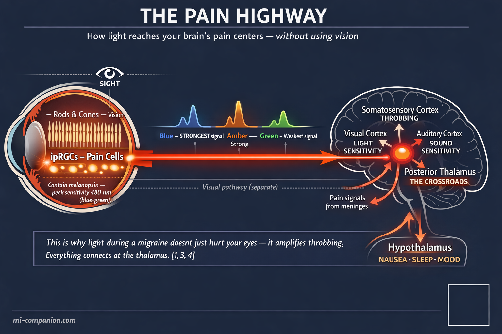
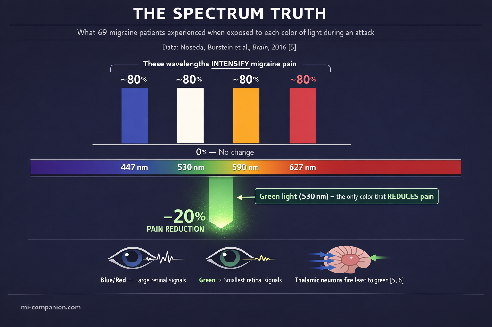
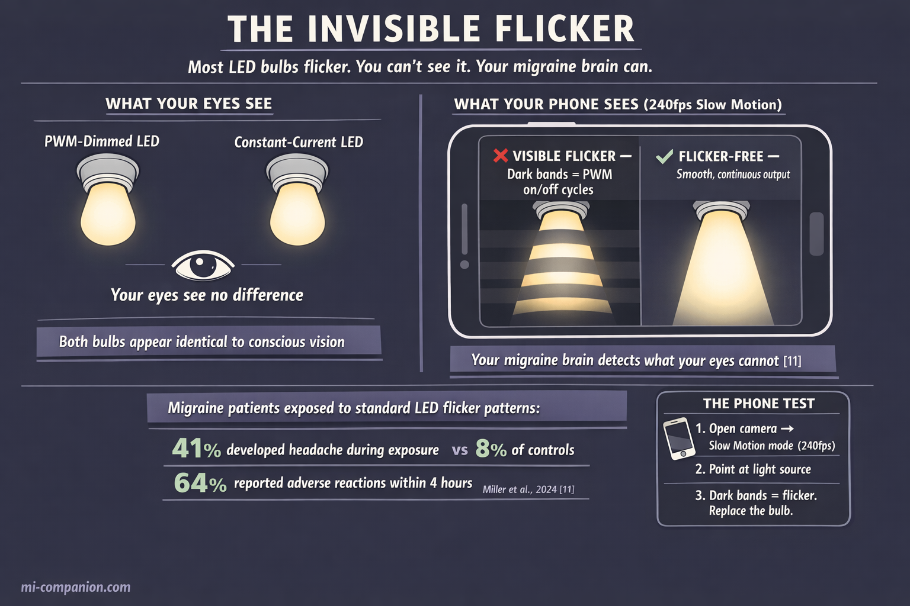
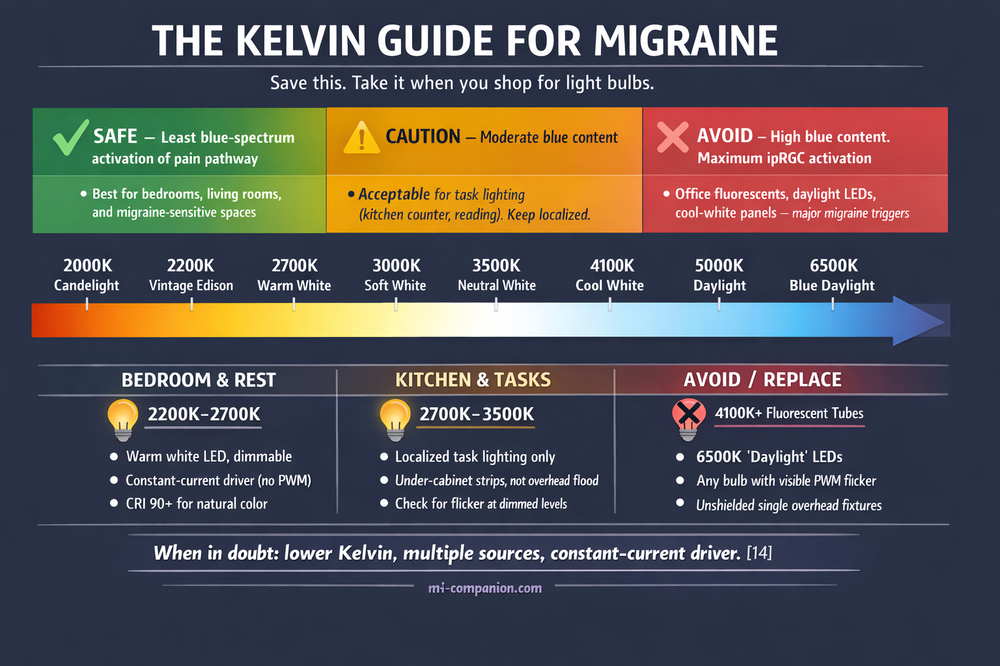
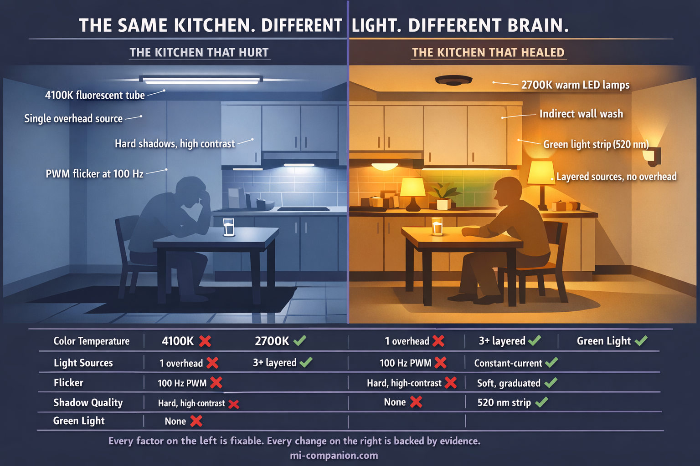

By Rustam Iuldashov
30 years lived experience with chronic migraine | Sources: 22 peer-reviewed references including Nature Neuroscience, Brain, Cephalalgia, Frontiers in Neurology, American Journal of Ophthalmology, Lighting Research & Technology | Last updated: March 7, 2026
Medical Review: This content is based on peer-reviewed research from Nature Neuroscience, Brain, Cephalalgia, Frontiers in Neurology, Journal of Headache and Pain, American Journal of Ophthalmology, Lighting Research & Technology, and Brain Sciences.
Important Notice: This article is for informational purposes only and does not replace professional medical advice. The author is not a licensed physician or healthcare professional. Always consult your doctor before making changes to your treatment plan.
Key Takeaways
- Your eyes contain specialized cells (ipRGCs) that send pain signals directly to the brain — completely separate from vision[1]
- Blue, amber, and red light activate the pain pathway most aggressively; a narrow band of green light (530 nm) reduces pain by ~20%[5]
- Green light therapy reduced monthly headache days by approximately 60% in a clinical trial[7]
- Most LED bulbs flicker invisibly — 41% of migraine patients developed headaches from standard LED flicker vs 8% of controls[11]
- Chronic darkness between attacks worsens photophobia over time[12, 13]
- Warm light (2700K or below), flicker-free drivers, layered sources, and green light strips can measurably reduce attack frequency
⚠️ When Light Becomes an Emergency
If you experience sudden, extreme light sensitivity combined with the worst headache of your life, a stiff neck, or vision changes — call emergency services immediately. These symptoms may signal a condition more serious than migraine.
The fluorescent tube above my kitchen sink was on. I was sitting beneath it during what felt like a manageable migraine, just trying to drink a glass of water. Then the pain doubled. Not gradually — like a switch. I squinted. The tube buzzed. I abandoned the water and retreated to the bedroom, curtains drawn, lights off, four hours gone.
Thirty years I blamed the headache for those lost afternoons. It never occurred to me to blame the tube.
I was wrong. That light was not a passive bystander to my pain. It was a participant — and the neuroscience explaining why is one of the most surprising and practical discoveries in modern migraine research. Your home is almost certainly making the same mistakes mine did. But unlike most migraine triggers, this one you can fix tonight.
A Pain Pathway That Has Nothing to Do with Seeing
Close your eyes and press your palms against them. You see nothing. But if someone turned on a bright lamp right now, your migraine brain would still register it as a threat. How?
In 2010, neuroscientist Rami Burstein at Harvard Medical School found the answer: a dedicated neural highway from the eyes to the brain’s pain centers that operates entirely independently of vision.[1] The highway runs through a class of retinal cells that most people have never heard of — intrinsically photosensitive retinal ganglion cells, or ipRGCs. Unlike the rods and cones that let you read this sentence, ipRGCs contain a light-sensitive protein called melanopsin. Melanopsin peaks in sensitivity at approximately 480 nanometers — dead center in the blue-green part of the spectrum.[2]
This single fact rewrites the rulebook. Your brain can register “dangerous light” even when the light is not particularly bright to your conscious vision. Burstein’s team proved this in the starkest way imaginable: blind migraine patients who had lost every rod and every cone — who could not see at all — still experienced agonizing photophobia during attacks.[1] The light they could not see still hurt.
But the anatomy goes deeper. Burstein’s group traced ipRGC projections into the posterior thalamus, a brain region where photic signals converge on the same neurons that carry pain signals from the meninges.[3] Picture a train junction. On one track: light information from your eyes. On the other: nociceptive signals from the inflamed tissues surrounding your brain. They meet on a single set of thalamic neurons, which then project outward to the somatosensory cortex, the visual cortex, the auditory cortex, and to regions governing sleep, mood, and autonomic function.[4]
This convergence explains something every migraine sufferer knows intuitively but has never had words for: why light during an attack does not just hurt your eyes. It amplifies throbbing. It deepens nausea. It sharpens sound sensitivity. Everything is wired together at the thalamic crossroads — and light pulls every wire at once.

One Color Refused to Follow the Rules
For years after the ipRGC discovery, the logic seemed straightforward: blue light activates melanopsin most powerfully, therefore block blue light. Several companies built products on this assumption. They were half right.
In 2016, a study published in Brain shattered the simple narrative. Noseda, Burstein and colleagues exposed 69 migraine patients with normal eyesight to narrow bands of five different lights during active attacks — blue (447 nm), green (530 nm), amber (590 nm), red (627 nm), and white. At moderate to high intensity, nearly 80% of patients reported worsening pain from blue, amber, red, and white light. No surprise there. But green light broke the pattern. At low intensity, it did not just fail to worsen pain. It reduced pain by approximately 20%.[5]
No one expected that.
The explanation turned out to be almost beautiful in its simplicity. Using electroretinography and visual evoked potentials, the team measured the electrical signals each color generated in the retina and cortex. Green light produced the smallest signals in both locations — dramatically smaller than blue, red, amber, or white. In simultaneous recordings from 97 thalamic neurons in animal models, those cells fired most vigorously to blue light and least vigorously to green.[5, 6] The migraine brain recoils from most of the spectrum. Green is the one color it can tolerate — and may even welcome.
Dr. Mohab Ibrahim at the University of Arizona took this from laboratory curiosity to clinical reality. His team enrolled 29 migraine patients — every one of them had failed multiple standard treatments — in a crossover trial. Ten weeks of white LED exposure (1–2 hours daily). Two-week washout. Then ten weeks of green LED exposure. Green light reduced monthly headache days by approximately 60%. Among episodic migraine patients, 86% achieved a greater-than-50% reduction. Pain intensity dropped from 8 out of 10 to 3.2. Sleep improved. Work capacity improved. Side effects: zero.[7]
When the study ended, patients were told to return their green light strips. Twenty-eight out of 29 refused.[7]
A larger study by Lipton, Burstein and colleagues — 181 patients, open-label, real-world conditions — confirmed the pattern: two hours of narrow-band green light during attacks improved headache perception in 55% of all reported events, with additional benefits for photophobia, anxiety, and same-night sleep.[8] A 2025 RCT with 69 patients further supported green light’s effect on migraine frequency and intensity.[22]
These remain early findings. The Arizona trial was unblinded. Sample sizes are modest. Larger randomized controlled trials are underway (NCT04841083). But the biological mechanism is well characterized, the direction of evidence is consistent across laboratories, and the risk profile is essentially nonexistent.

The Flicker You Cannot See Is the Flicker That Matters
Here is where the story turns uncomfortable — because this next problem is almost certainly in your home right now, and you have no idea.
Most LED bulbs flicker. Not in the way a dying fluorescent tube visibly strobes — in a way that is technically invisible. LEDs are semiconductor devices requiring direct current, but household wiring delivers alternating current at 50–60 Hz. Many LED drivers convert this imperfectly, producing rapid on-off cycling. When manufacturers use pulse width modulation — PWM — to dim bulbs, the light literally switches on and off hundreds of times per second.[9]
The longstanding assumption: flicker above 60–80 Hz is imperceptible and therefore harmless. For the general population, this is roughly true. For the migraine brain, it is wrong.
Migraine patients lack the normal habituation response to repetitive visual input. EEG studies show that migraine brains synchronize — amplify — their electrical activity in response to flicker, while healthy brains do the opposite: they dampen.[10] The migraine brain turns up the volume on a stimulus that other brains learn to ignore.
A 2024 study by Miller and colleagues delivered the first direct evidence. It was the first flicker experiment to include migraine patients alongside healthy controls. The results: migraine participants detected flicker significantly better than controls. Forty-one percent developed headaches during the 60–120 minute session — versus 8% of controls. Within four hours, 64% of migraine participants reported discomfort or adverse reactions, compared to 19% of controls.[11]
Read those numbers again. The flicker came from lighting patterns typical of standard architectural LEDs. Patterns that meet current industry standards for “acceptable” flicker. Patterns designed around the assumption that imperceptible means safe.
For people with migraine, that assumption is a clinical error.
The practical implication: a bulb labeled “flicker-free” may not be flicker-free. A dimmer that works beautifully at 100% brightness can introduce vicious PWM flicker at 50% or 25%. The smartphone test — shooting your light source in slow-motion video mode and looking for banding — is crude but useful.[9] True flicker elimination requires constant-current LED drivers, not PWM circuits. And if you still have fluorescent tubes with magnetic ballasts anywhere in your home, replacing them should move to the top of the list. Those tubes flash at 100 Hz and develop increasingly visible 50 Hz modulation as they age — a modulation depth above 35% has been directly linked to headache induction.[15]

Why Hiding in Darkness Makes Everything Worse
This is the part that contradicts every instinct. It contradicted mine for decades.
When an attack hits, every nerve in your body screams one word: dark. You close blinds. You shut doors. You press your face into a pillow. During an acute attack, this is still appropriate — reducing photonic input genuinely helps.
But between attacks, chronic light avoidance quietly rewires your sensitivity upward.
Burstein has been blunt about this: living in darkness increases light sensitivity and makes it harder to function in environments you cannot control.[12] The American Migraine Foundation’s guidance is equally direct — resist the impulse to permanently shield yourself from light.
A randomized crossover fMRI study explored the mechanism. Migraine patients spent one hour daily for seven consecutive days either exposed to flashing light or sitting in complete darkness. Planned light exposure was associated with headache reduction, potentially by strengthening habituation — the brain’s ability to turn down its response to repeated input.[13] This is the same habituation deficit that makes migraine patients vulnerable to flicker, patterns, and repetitive visual stimuli. Training the brain to tolerate light, gently and consistently, may begin to normalize what chronic avoidance distorts.
The implication reshapes how you think about your home. The goal is not to eliminate light. The goal is to curate it — gentle, warm, steady, layered — so your nervous system has a stable, tolerable baseline. Not darkness punctuated by harsh exposure. A steady, calibrated glow.
Seven Changes You Can Make Tonight
Everything above collapses into a practical blueprint. I built this system for my own home over 30 years, now updated with the latest evidence.
1. Drop your color temperature to 2700K or below.
Kelvins measure the warmth of light. Lower numbers mean warmer, more amber tones with less blue-spectrum content. Daylight bulbs (5000K–6500K) deliver the blue wavelengths that maximally activate the ipRGC pain pathway.[14] Warm white (2700K) dramatically reduces that activation. If you need brighter task lighting — kitchen counter, reading lamp — stay below 4000K and keep it localized, not flooding the room.
2. Test every bulb for flicker.
Open your smartphone camera in slow-motion mode. Point it at each light source at various brightness levels. Banding or dark stripes mean PWM flicker. Replace offending bulbs with models that use constant-current drivers. Pay special attention to dimmed settings — flicker that vanishes at full brightness can roar back at lower levels.
3. Layer your light sources.
A single overhead fixture is the worst configuration for a photosensitive brain — high intensity, one angle, harsh shadows. Replace it with multiple lower-intensity sources: table lamps at or below eye level, indirect wall wash, dimmable ambient fixtures. This distributes light evenly, reduces contrast between bright spots and dark corners, and gives you control.[16]
4. Add a green light source.
A narrow-band green LED strip or lamp (520–530 nm), used for 1–2 hours daily in a dimmed room, may serve as a preventive tool. Commercially available therapy lamps built to Ibrahim’s specifications exist. The wavelength and intensity matter — a green-tinted party bulb will not work. Think of this as a light environment, not a spotlight. Do not stare directly at the source.[7, 8]
5. Tame your screens.
Every phone, laptop, and television is a PWM-dimmed LED source. Enable dark mode. Reduce brightness manually — automatic brightness causes rapid luminance shifts. Activate warm color settings (“night shift”). Most critically: never use a bright screen in a dark room. That contrast spike is one of the worst configurations for photosensitive eyes.
6. Smooth your transitions.
Abrupt light changes — dim hallway to bright kitchen, indoor to direct sunlight — are potent triggers. Install dimmers in transition zones. Turn on a lamp before opening curtains. Smart bulbs that gradually increase brightness over minutes replicate a gentle dawn, giving your neural adaptation systems the time they need.
7. Consider precision-tinted lenses for vulnerable moments.
FL-41 tinted lenses filter the 480 nm peak that maximally activates ipRGCs. Studies show migraine frequency dropping from 6.2 to 1.6 attacks per month in children wearing FL-41.[17] A 2024 fMRI study confirmed that FL-41 reduces activation of neural pain pathways during light exposure.[18] Newer multi-band filters (such as Avulux) extend filtering to amber and red wavelengths while transmitting green light, and have undergone randomized controlled testing.[19] Use these as situational tools — wearing dark lenses indoors chronically triggers dark adaptation and worsens photophobia over time.

The Tube I Should Have Replaced 30 Years Ago
The fluorescent tube in my kitchen. I can still hear its hum.
It was not just “bright.” It was emitting 4100K cool white light saturated with the exact wavelengths that maximally activate my pain pathway. It was flickering at 100 Hz — a frequency my conscious eyes could not detect but my thalamic neurons registered with every cycle. It was a single overhead source creating sharp shadows and high contrast in every direction. And every time I fled to total darkness afterward, I was training my brain to become even more sensitive to it the next day.
Every single one of those factors was fixable. I just did not know.
You do now. A warmer bulb. A flicker-free driver. A green light strip where you rest. Lamps instead of overheads. Gradual transitions instead of sudden switches.
The tube is gone now. The kitchen has three warm lamps, a dimmer, and a narrow-band green strip under the upper cabinets that I switch on during quiet evenings. The migraines did not disappear — thirty years in, I am not naive. But the kitchen stopped being a place I feared. The light became something I could work with instead of against.
That is what the science offers. Not a cure. Something more practical: control.

⚕️ Important Medical Disclaimer
This article is for informational and educational purposes only and does not constitute medical advice, diagnosis, or treatment. The author, Rustam Iuldashov, is not a licensed physician, neurologist, or healthcare professional. He is a patient advocate with 30 years of personal experience living with chronic migraine.
All clinical claims in this article are sourced from peer-reviewed research published in indexed medical journals. Study designs and sample sizes are noted where applicable.
Always consult a qualified healthcare provider for questions about your individual health, migraine treatment, or lighting modifications.
Green light therapy and lighting adjustments should complement — never replace — professional medical care. This content was last reviewed for accuracy on March 7, 2026.
References
- Noseda R, Kainz V, Jakubowski M, et al. “A neural mechanism for exacerbation of headache by light.” Nature Neuroscience, 13(2):239–245 (2010). doi:10.1038/nn.2475. Study design: Mechanistic study. n=6 blind migraine patients + animal model.
- Digre KB, Brennan KC. “Shedding light on photophobia.” Journal of Neuro-Ophthalmology, 32(1):68–81 (2012). doi:10.1097/WNO.0b013e3182474548. Study design: Narrative review.
- Noseda R, Jakubowski M, Kainz V, Borsook D, Burstein R. “Cortical projections of functionally identified thalamic trigeminovascular neurons.” Journal of Neuroscience, 31(40):14204–14217 (2011). doi:10.1523/JNEUROSCI.3285-11.2011. Study design: Animal model; neural tracing.
- Noseda R, Lee AJ, Nir RR, et al. “Neural mechanism for hypothalamic-mediated autonomic responses to light during migraine.” PNAS, 114(28):E5683–E5692 (2017). doi:10.1073/pnas.1708361114. Study design: Animal model + clinical.
- Noseda R, Bernstein CA, Nir RR, et al. “Migraine photophobia originating in cone-driven retinal pathways.” Brain, 139(Pt 7):1971–1986 (2016). doi:10.1093/brain/aww119. Study design: Psychophysical + electrophysiology + animal model. n=69.
- Noseda R, Copenhagen D, Burstein R. “Current understanding of photophobia, visual networks and headaches.” Cephalalgia, 39(13):1623–1634 (2019). doi:10.1177/0333102418784750. Study design: Review.
- Martin LF, Patwardhan AM, Jain SV, et al. “Evaluation of green light exposure on headache frequency and quality of life in migraine patients: a preliminary one-way cross-over clinical trial.” Cephalalgia, 41(2):135–147 (2021). doi:10.1177/0333102420956711. Study design: Crossover clinical trial. n=29. NCT03677206.
- Lipton RB, Melo-Carrillo A, Severs M, et al. “Narrow band green light effects on headache, photophobia, sleep, and anxiety among migraine patients.” Frontiers in Neurology, 14:1282236 (2023). doi:10.3389/fneur.2023.1282236. Study design: Open-label, real-world. n=181.
- Batra S, et al. “LED lighting flicker, its impact on health and the need to minimise it.” Journal of Clinical and Diagnostic Research, 13(5):NE01–NE05 (2019). Study design: Narrative review.
- Angelini L, et al. “Increased EEG alpha band phase synchronization in migraine patients exposed to visual flicker.” (2004). Referenced via Flickersense.org scientific literature compilation. Study design: EEG study; migraine vs controls.
- Miller N, et al. “Visibility and annoyance of the phantom array effect varies with age and history of migraine.” Lighting Research & Technology (2024). doi:10.1177/14771535241288783. Study design: First flicker study including migraine patients.
- American Migraine Foundation. “Photophobia (Light Sensitivity) and Migraine.” Resource Library. Quoting Dr. Rami Burstein, Harvard Medical School. americanmigrainefoundation.org. Expert clinical guidance.
- Stankewitz A, et al. “Avoid or seek light — a randomized crossover fMRI study investigating opposing treatment strategies for photophobia in migraine.” The Journal of Headache and Pain, 23:107 (2022). doi:10.1186/s10194-022-01466-0. Study design: Randomized crossover; fMRI. n=10 migraine + 11 controls.
- National Headache Institute. “Light sensitivity and headaches: color temperature guide.” nationalheadacheinstitute.com. Clinical guidance on Kelvin selection.
- Wilkins AJ, Nimmo-Smith I, Slater AI, Bedocs L. “Fluorescent lighting, headaches and eyestrain.” Lighting Research & Technology, 21(1):11–18 (1989). doi:10.1177/096032718902100102. Study design: Landmark workplace study.
- Rensselaer Polytechnic Institute Lighting Research Center. “Architecturally integrated lighting — Pattern Book.” lrc.rpi.edu. Human-centric lighting design principles.
- Good PA, Taylor RH, Mortimer MJ. “The use of tinted glasses in childhood migraine.” Headache, 31(8):533–536 (1991). doi:10.1111/j.1526-4610.1991.hed3108533.x. Study design: RCT. n=20. Frequency: 6.2→1.6/month.
- Reyes N, Huang JJ, Choudhury A, et al. “FL-41 tint reduces activation of neural pathways of photophobia in patients with chronic ocular pain.” American Journal of Ophthalmology, 259:172–184 (2024). doi:10.1016/j.ajo.2023.12.004. Study design: Prospective fMRI. n=25.
- Katz BJ, et al. “Thin-film optical notch filter spectacle coatings for the treatment of migraine and photophobia.” Journal of Clinical Neuroscience, 28:71–76 (2016). doi:10.1016/j.jocn.2015.09.024. Study design: Randomized crossover. n=37.
- Artemenko AR, Filatova E, Vorobyeva YD, et al. “Migraine and light: a narrative review.” Headache, 62(1):4–10 (2022). doi:10.1111/head.14250. Study design: Review.
- Blackburn MK, Lamb RD, Digre KB, et al. “FL-41 tint improves blink frequency, light sensitivity, and functional limitations in patients with benign essential blepharospasm.” Ophthalmology, 116(5):997–1001 (2009). doi:10.1016/j.ophtha.2008.12.031. Study design: Randomized crossover. n=30.
- Peroz-Guardia B, et al. “Green light and transcranial direct current stimulation in migraine patients: a preliminary randomized control trial.” Brain Sciences, 15(11):1209 (2025). doi:10.3390/brainsci15111209. Study design: RCT. n=69. NCT06212869.

How We Create Content
- Peer-reviewed sources only. Nature Neuroscience, Brain, Cephalalgia, Frontiers in Neurology, Journal of Headache and Pain, American Journal of Ophthalmology, Lighting Research & Technology, Brain Sciences.
- Study transparency. Study design and sample sizes noted for all clinical references.
- Source verification. All claims backed by numbered references with DOI links.
- Experience + Science. 30 years personal migraine experience combined with peer-reviewed evidence.
- Regular updates. Articles reviewed when significant new research emerges.
- No conflicts of interest. No funding from lighting manufacturers, eyewear companies, or pharmaceutical firms.
Track Your Light Triggers. Understand Your Pattern.
Migraine Companion helps you log attacks, track triggers including light exposure, and build the personal dataset that turns unpredictable pain into actionable patterns.
Last reviewed: March 2026
Next scheduled review: September 2026